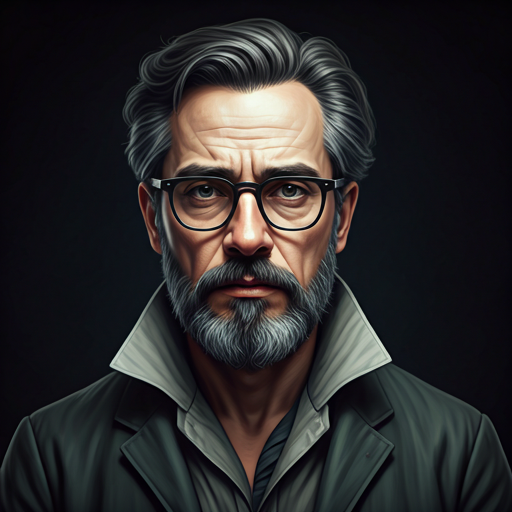

KILIANZHOU
作品集
KILIANZHOU
作品集
KILIANZHOU
作品集
PORTFOLIO
平面设计师&摄影摄像师&剪辑师
Graphic
Designer, Photographer & Videographer, and Editor
通过巨石般的字体设计与严谨的档案式精确性，定义高端机构的视觉语言。我们不是在设计，而是在构建持久的数字纪念碑。


奢华酒店视觉策划 (Luxury Hospitality)
JW Marriott
ETHEREAL
全面视觉识别重新设计，专注于传承与现代极简奢华的融合。针对万豪旗下 JW 品牌进行的视觉系统全案重构。
Ritz-Carlton
LEGACY
针对历史悠久的欧洲资产组合进行的全球传播策略与编辑设计。重新定义顶级奢华的叙事方式。
HYBRID
INTELLIGENCE
基于生成式AI工作流的未来品牌探索。打破传统设计的边界，通过算法创造无限可能的视觉延展。
工作经历 / ARCHIVE
项目背景 / CONTEXT
该项目探索了声音波形与动态排版之间的同步性。通过生成算法，将声学参数转化为流动的视觉构架。
核心职责 / IMPACT
- 开发实时音频响应排版引擎
- 视觉系统与数字界面的整合
项目背景 / CONTEXT
为柏林时装周设计的全新品牌系统，平衡工业感与现代时尚的精致。
while (evolving) { analyze_pixel_density(); refine_composition(); }
// Visual Overstep Protocol Active
[0.44, 0.12, 0.99, 0.51, 0.22, 0.87, 0.12, 0.44]
生成式综合体
(GENERATIVE
SYNTHESIS)
利用 AI 的混沌潜力突破视觉边界。我将 Midjourney 和自定义大语言模型 (LLM) 工作流整合到专业制作管线中。